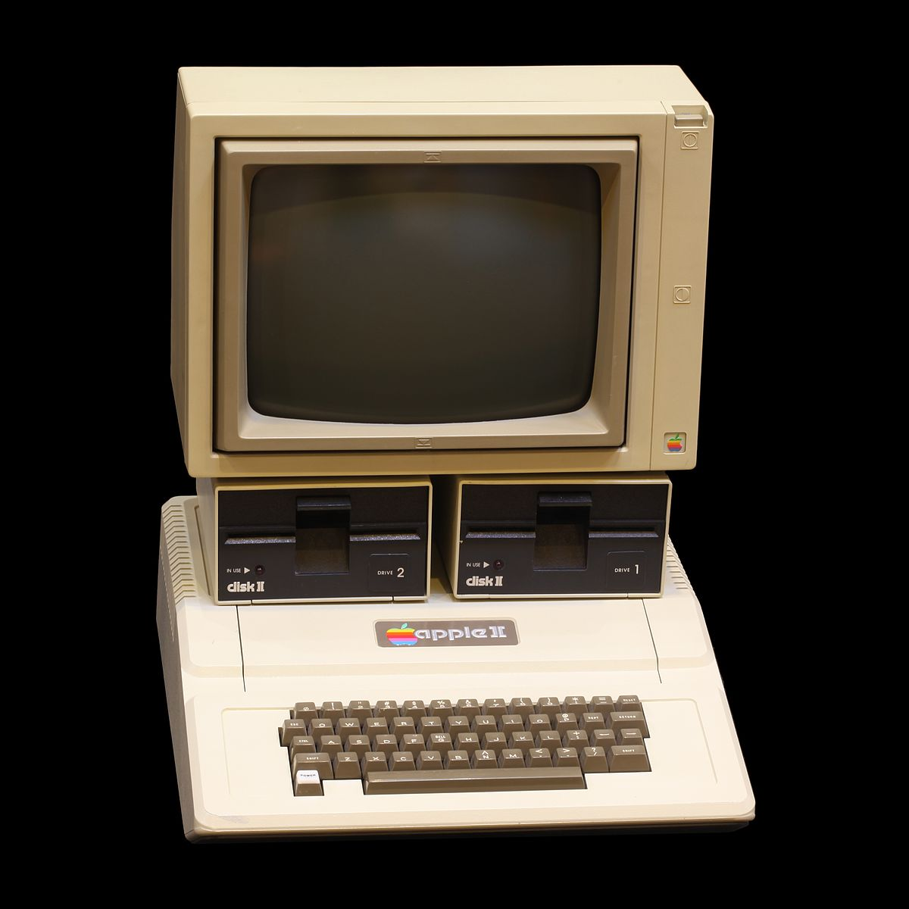
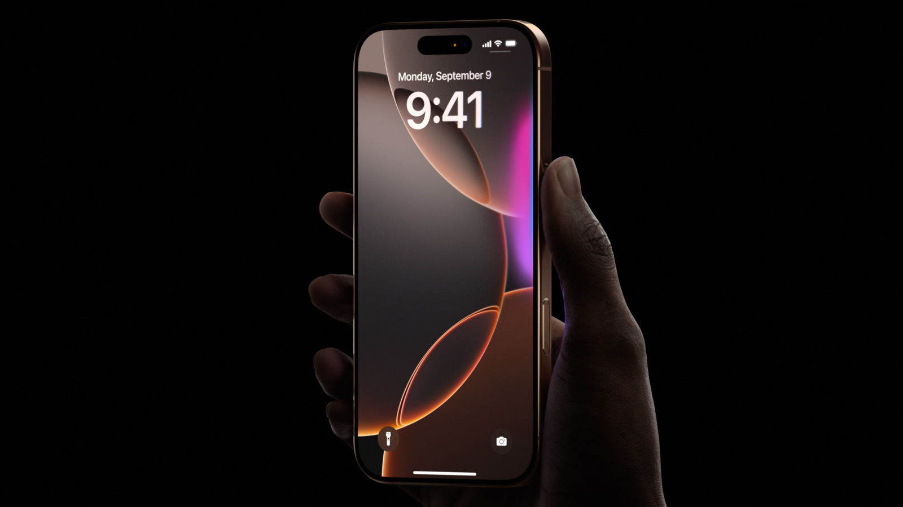

La Historia de Apple
Publicado el 25/05/2025
Ignacio Confalonieri
Apple Inc. es una de las empresas más influyentes del mundo, conocida por revolucionar la tecnología de consumo. Fue fundada el 1 de abril de 1976 por Steve Jobs, Steve Wozniak y Ronald Wayne en California, Estados Unidos.
Su primer producto fue la Apple I, una computadora ensamblada a mano. Poco después, lanzaron la Apple II, una de las primeras computadoras personales en tener éxito comercial.
En los años 80, Apple lanzó la Macintosh, una computadora con interfaz gráfica, algo innovador para la época. Sin embargo, problemas internos llevaron a la salida de Steve Jobs en 1985.
La empresa atravesó tiempos difíciles hasta que Jobs regresó en 1997. Desde entonces, Apple revolucionó el mercado con productos como el iMac, iPod, iPhone, iPad y el Apple Watch, además de crear un ecosistema único con iOS y macOS.
Hoy, Apple es una de las empresas más valiosas del mundo, y su influencia se extiende a la música, el cine, la educación y la salud. Su diseño minimalista, innovación y enfoque en la experiencia del usuario la han convertido en un ícono mundial.
Apple no solo cambió la tecnología, sino también nuestra forma de comunicarnos, trabajar y entretenernos.